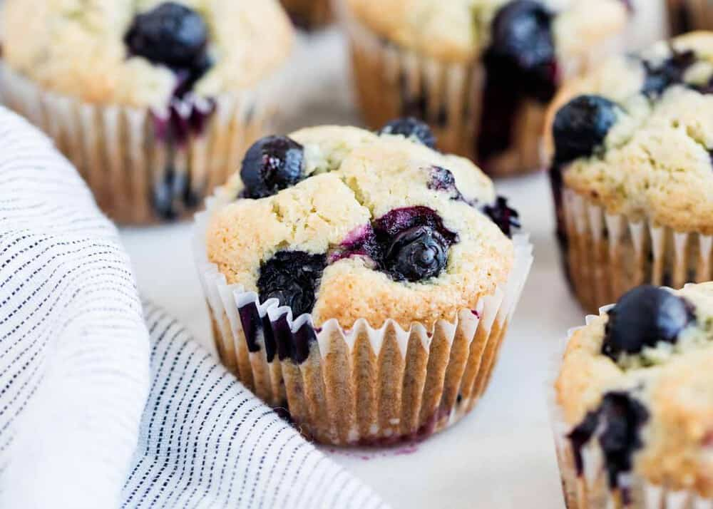

Blueberry Muffin

Description
These blueberry muffins are quick and easy with a moist and tender center bursting with blueberries and perfectly golden brown top. They are extra easy to make, too.
Ingredients:
- ½ cup softened butter
- 1 ¼ cups sugar
- 2 eggs
- 1 teaspoon vanilla extract
- 2 cups flour
- ½ teaspoon salt
- 2 teaspoons baking powder
- ½ cup milk
- 2 cups blueberries, washed, drained and picked over
- 3 teaspoons sugar
Steps:
- Preheat the oven to 375.
- Cream the butter and 1 1/4 cups sugar until light.
- Add the eggs, one at a time, beating well after each addition. Add vanilla.
- Sift together the flour, salt and baking powder, and add to the creamed mixture alternately with the milk.
- Crush 1/2 cup blueberries with a fork, and mix into the batter. Fold in the remaining whole berries.
- Line a 12 cup standard muffin tin with cupcake liners, and fill with batter. Sprinkle the 3 teaspoons sugar over the tops of the muffins, and bake at 375 degrees for about 30-35 minutes.
- Remove muffins from tin and cool at least 30 minutes. Store, uncovered, or the muffins will be too moist the second day, if they last that long.